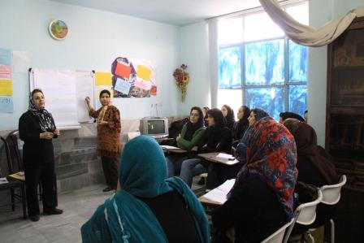
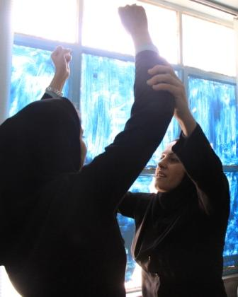
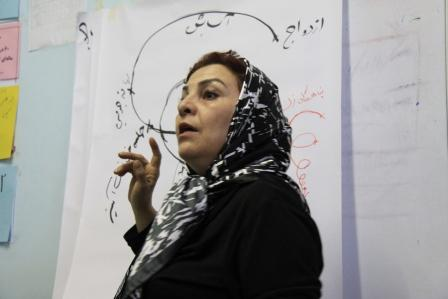
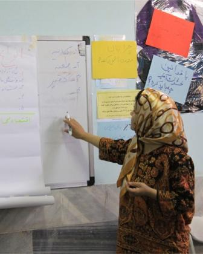

|
|

روایات زنانی که هر روز این چرخه را تجربه میکنند، گزارش کارگاه خشونت درسنندج / ژینا مدرس گرجی
چهار شنبه30 بهمن 1387
وبلاگ کمپین کردستان نیز اغاز به کار کرد
http://kurdsincampain.blogfa.com/
گزارش و عکس : ژینا مدرس گرجی

تغییر برای برابری - زنان در کردستان سوای خشونتهای مشترک با دیگر زنان، درگیر خشونتهای خاص دیگری نیز هستند. براساس نیاز شدید زنان و به منظور شناخت خشونت و انواع آن، تبادل تجربه و راهکارهای مقابله با خشونت، کارگاه آموزشی خشونت در سنندج برگزار شد. این کارگاه در تاریخ 26 بهمن ماه به مدت 5 ساعت و با همکاری دو نفر از اعضای کمپین یک میلیون امضا تهران و سنندج و با شرکت 32 نفر شرکت کننده برگزار شد.
در این کارگاه جمعی از زنان فعال سنندج، زنان خشونت دیده و زنانی که خواهان آموزش و کمک به دیگر زنان بودند، و همچنین خانمها پروین ذبیحی و فراست ناصری از مریوان، ثریا پورپشنگی از سقز، گلاله بهرامی از کرمانشاه حضور داشتند.

کارگاه بعد از معرفی شرکت کنندگان و تسهیلگران، با "مجسمه و مجسمه ساز" شروع و در مرحله بعد به روش بارش افکار تعریف خشونت، انواع خشونت، خشونت خانگی، دلایل تحمل زنان، چرخه خشونت و ... و بالاخره راهکارهای مقابله با خشونت خانگی مورد بحث قرار گرفت.
شرکت فعالانه شرکت کنندگان در این کارگاه به خصوص در مورد بازگو کردن تجربه های خود و یا نزدیکان خود که مورد خشونت قرار گرفته بودند قابل توجه بود. بسیاری از آنان مشکلات سرپرستی و حضانت فرزندانشان را پس از فوت یا جدایی از همسرشان داشتند. خشونت فیزیکی یکی از بیشترین نوع خشونتی بود که شرکت کنندگان تجربه کرده بودند. همینطور خشونت اقتصادی و روانی.
وقتی چرخه خشونت توضیح داده میشد، شرکت کنندگان چنان به دقت گوش فراداده بودند و تجربه های خود را بازگو میکردند که گویی هرروز این چرخه را تجربه میکنند.

در طی کارگاه از خشونتهایی بحث شد که به طور خاص در منطقه های اهل تسنن و کردنشین به چشم میخورد از جمله: سه طلاقه، شیربها، مبادله زن به زن، ختنه زنان و همچنین خشونتهایی که در کردستان بسیار گسترده است مانند قتل های ناموسی و خودسوزی زنان که البته در این مورد فعالان زنان بسیار تلاش کرده و میکنند.
بعد از یک استراحت ده دقیقه ای نمایشی با موضوع سرپرستی (ولایت) فرزندان اجرا شد که بسیار مورد توجه شرکت کنندگان قرار گرفت و واقعا آنها را تحت تاثیر قرار داد. از قسمتهای جالب دیگر در این کارگاه درخت خشونت بود که با مشارکت فعالانه شرکت کنندگان ترسیم شد.
از آنجایی که درصد بسیاری از خشونت های خانگی ریشه در خشونت های قانونی و قوانین نابرابر دارد، بخش آخر کارگاه اختصاص به خشونت های قانونی و بالاخره راهکارهای مقابله با خشونت بود که بسیار مورد توجه قرار گرفت و شرکت کنندگان را تشویق کرد به مقابله با خشونت و نه تحمل آن.

این کارگاه تجربه ای تازه و مفید برای زنان سنندج بود. در طول برنامه بیان تجربه های مشترک زنان، جمع صمیمانه ی آنان و ارتباطهای جدیدی که به وجود آمد، از اتفاقهای مهم این کارگاه بود. به امید اینکه این کارگاه ها، دفعه های بعد توسط شرکت کنندگان برای دیگر زنان تشکیل شود تا با همکاری هم امضاهای بیشتری را بر فرمهایی که به منظوردرخواست تغییر قوانین تبعیض آمیز نوشته و طراحی شده، بنشانیم و روزهایی داشته باشیم عاری از هرگونه خشونت.